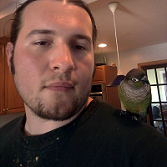

Biography

Timothy James Alferes
(Evanston, Illinois, 1988) is a
software developer, artist, and author.
While working in construction and farming,
he studied world religions and philosophy with a focus on the works of
Heraclitus, Parmenides, Socrates/Plato, Diogenes, Jesus, Plotinus,
Boethius, Eckhart von Hochheim, Shakespeare, Erasmus, Kierkegaard,
Gautama Siddhartha, Nagarjuna, Shantideva, Bodhidharma, Huineng,
Yung-chia Hsuan-chueh, Huang Po, Hakuin, Junayd, Hujwiri, Ghazali,
Suhrawardi, Ibn 'Arabi, Rumi, Nasreddin, Hafez, and Sanai.
As an artist he first became known for his painting
Emptiness
(2014).
During 2016, having become partially disabled by a chronic illness,
he stopped work in construction and farming, and began teaching
himself computer programming and application development for web and
IoT.
He is currently studying economics, computer science, and mathematics,
composing several still life, landscape, genre, and mythological
paintings, and writing several books on gardening, cooking, history,
technology, and philosophy.